Table of contents |
Author: Johannes Buchner Homepage: http://astrost.at/istics/ Further information: The Compton-thick growth of Supermassive Black Holes constrainedAbstract: A heavily obscured growth phase of supermassive black holes (SMBH) is thought to be important in the co-evolution with galaxies. X-rays provide a clean and efficient selection of unobscured and obscured AGN. Recent work with deeper observations and improved analysis methodology allowed us to extend constraints to Compton-thick number densities. We present the first luminosity function of Compton-thick AGN at z=0.5-4 and constrain the overall mass density locked into black holes over cosmic time, a fundamental constraint for cosmological simulations. Recent studies including ours find that the obscuration is redshift and luminosity-dependent in a complex way, which rules out entire sets of obscurer models. A new paradigm, the radiation-lifted torus model, is proposed, in which the obscurer is Eddington-rate dependent and accretion creates and displaces torus clouds. We place observational limits on the behaviour of this mechanism.  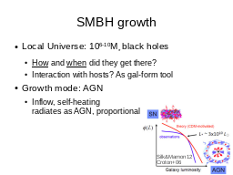
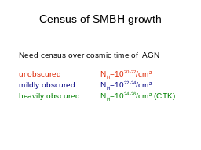
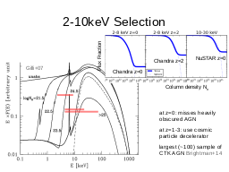
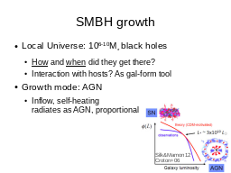
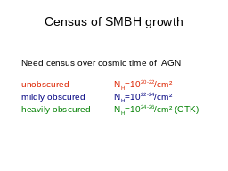
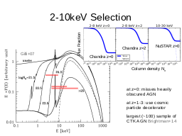

 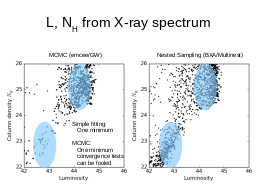
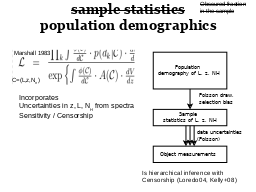
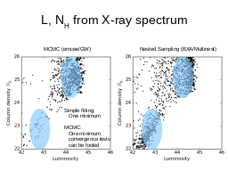
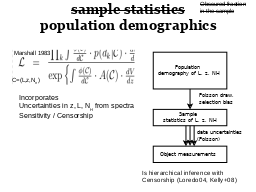
 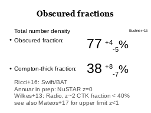
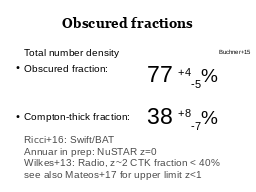
 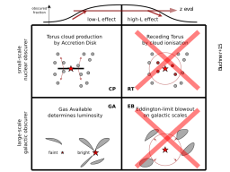
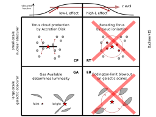


 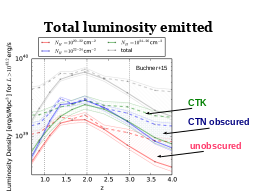
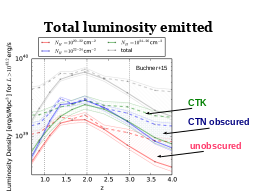


|